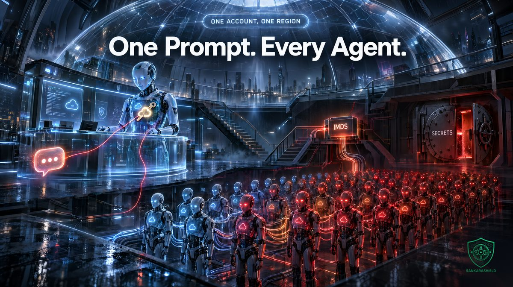

One prompt, every agent: inside AgentCorruption on AWS AgentCore.

A single prompt sent to a public-facing AI agent. That is all Zenity Labs needed to reach the temporary cloud credentials behind it, read secrets the agent was never meant to touch, and take over every Amazon Bedrock AgentCore agent in the same AWS account and region.
Zenity calls the chain AgentCorruption. AWS says it describes expected and documented behavior. Both can be true at the same time, and that is exactly why every team deploying AI agents in the cloud should read it.
This brief explains what the researchers found, how AWS responded, why the attack pattern is older than it looks, and what AgentCore users and every agent builder should check now.
WHAT ZENITY FOUND
THE ENTRY POINT — an ordinary conversation with a public-facing AgentCore agent. No stolen password, no exposed key, no vulnerable web form. Just a prompt that convinced the agent to make a request on the attacker's behalf.
THE METADATA SERVICE — the agent could query the Instance Metadata Service (IMDS), the internal endpoint that hands out the temporary IAM credentials of the compute it runs on. Because the request came from inside the instance, IMDS answered. According to Zenity, those credentials were not scoped to the agent's sandbox.
THE DEFAULT ROLE — the AgentCore default execution role was generous. It included permissions such as bedrock-agentcore:GetResourceApiKey and secretsmanager:GetSecretValue. With the stolen credentials, the attacker could reach API keys and secrets that were meant to stay out of the agent's hands.
THE BLAST RADIUS — from there, the researchers took over every AgentCore agent in the same account and region. They accessed private conversations, cloud credentials, and persistently changed how agents behaved. One public chatbot became the way into all of them.
HOW AWS RESPONDED
AWS DISPUTES THE FRAMING — in its statement, AWS says the research inaccurately presents expected and documented behavior as a vulnerability. According to the reporting, AWS closed Zenity's initial report as "informative" in April 2026, while saying it had improved AgentCore's IMDS behavior.
WHAT CHANGED — according to Zenity, AWS has since made IMDSv2 the default for AgentCore deployments and tightened the default execution role around August 2026. IMDSv2 requires a session token obtained with a PUT request, which blocks many simple request-forgery tricks.
WHAT THAT MEANS FOR YOU — the fixes apply to defaults. Agents deployed before the change, or deployed with custom settings and broad roles, may still behave the way Zenity described. Sources disagree on how complete the fix is, so treat it as partial until you have checked your own environment.
THE BIGGER WARNING — speaking at SecTor 2026, Zenity researcher Tamir Sharbat said the IMDS weakness is likely not limited to AgentCore. The other platforms have not been named.
WHY THIS PATTERN IS NOT NEW
SSRF TO IMDS IS A CLASSIC — server-side request forgery against the metadata service, followed by credential theft, is the pattern behind the Capital One breach of 2019. It is the reason IMDSv2 exists in the first place.
THE NEW PART IS THE PATH IN — before, an attacker needed a vulnerable application that could be tricked into making a request. Now the application is an agent built to make requests, read results and follow instructions written in plain language. Prompt injection is request forgery with a friendlier interface.
THE AGENT IS A NEW IDENTITY — an agent holds an IAM role, calls APIs and touches data. Yet many teams deploy it like a chatbot widget, with the console's default role and no monitoring of its own. The cloud security model did not break. It was never applied to the agent.
SHARED ACCOUNTS SHARE FATE — public-facing and internal agents living in the same account and region meant that one compromise reached all of them. AWS accounts are the strongest isolation boundary the platform offers, and they went unused.
IF YOU RUN AGENTCORE
ENFORCE IMDSV2 EVERYWHERE — confirm that every agent requires IMDSv2, including agents deployed before the new default. Where you control the setting, block access to the metadata service entirely if the agent does not need it.
REPLACE THE DEFAULT ROLE — give each agent a custom execution role with only the permissions it needs. No wildcard access to Secrets Manager, no GetResourceApiKey unless it is required, and resource-level restrictions on every secret.
HUNT IN CLOUDTRAIL — review GetSecretValue, GetResourceApiKey and InvokeAgentRuntime calls made by agent roles. Look for calls from unusual sources, at unusual times, or against resources that agent never used before.
SEPARATE PUBLIC AND INTERNAL AGENTS — put public-facing agents in their own AWS account, away from internal agents and sensitive data. If one is compromised, the blast radius stops at the account boundary.
ROTATE WHAT MAY HAVE LEAKED — if a public agent ran with the old default role, rotate the secrets and API keys that role could read, and review agent configurations for changes you did not make.
FOR EVERY TEAM BUILDING AGENTS, ON ANY CLOUD
TREAT EVERY PROMPT AS UNTRUSTED INPUT — the same way you treat a web request from the internet. Validate what the agent is allowed to fetch, and block requests to internal and link-local addresses such as 169.254.169.254.
ASSUME THE ATTACKER CAN USE THE ROLE — whatever the agent's role can reach, a successful prompt injection can reach. Design permissions for that worst case, not for the happy path.
GIVE EACH AGENT ITS OWN IDENTITY — one role per agent, one log stream per agent, and clear ownership. Shared roles make both containment and investigation harder.
ALERT ON THE UNUSUAL — an agent role calling a service it has never used before, reading a secret outside its normal list, or invoking another agent is a strong signal. Build detections for it before you need them.
WHAT TO READ WITH CARE
This brief is based on Zenity Labs' published research and press release, Dark Reading's coverage and other analyses published since October 2026. AWS disputes that the behavior is a vulnerability. Sources differ on the exact disclosure timeline and on how complete the AWS changes are. The claim that the IMDS weakness extends to other platforms comes from Zenity, and those platforms have not been named. SankaraShield has not reproduced the research. Check AWS documentation and your own configuration before acting.
THE BOTTOM LINE
The cloud security model still works: least privilege, IMDSv2, account isolation, logging. AgentCorruption is what happens when an AI agent is deployed outside of it. Treat your agent for what it really is: code with cloud permissions that takes instructions from strangers.
Could one of your public-facing agents read your secrets today?